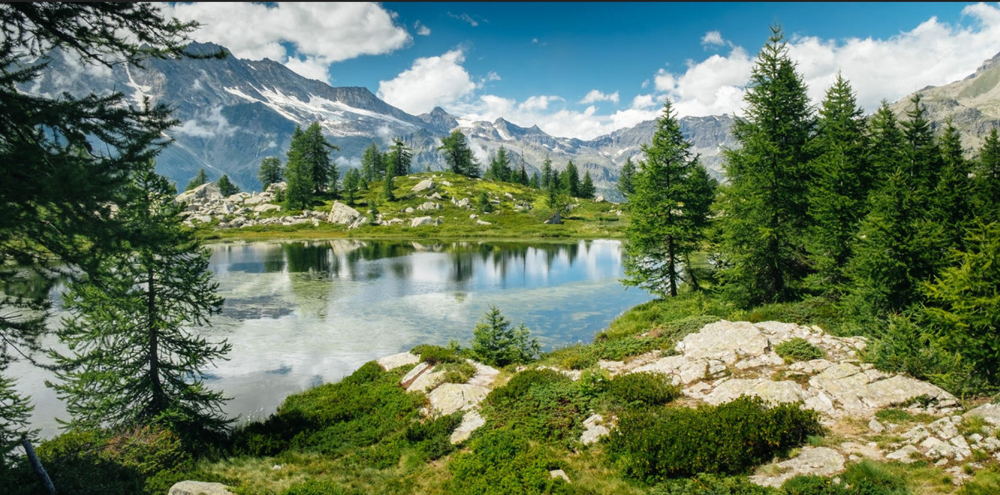
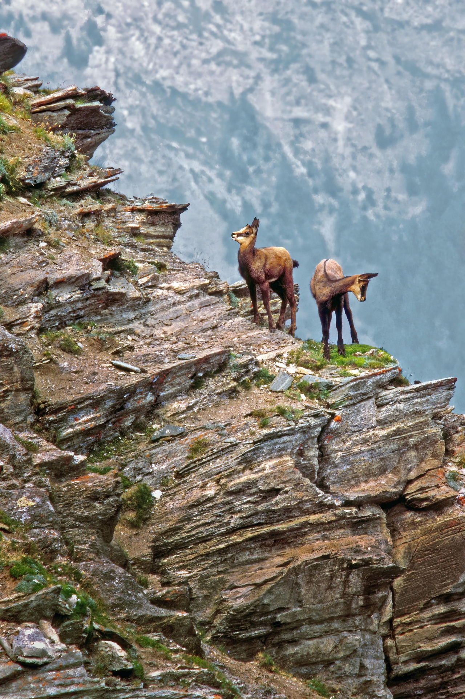
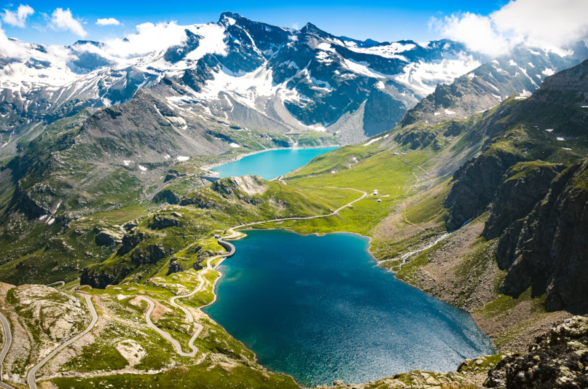
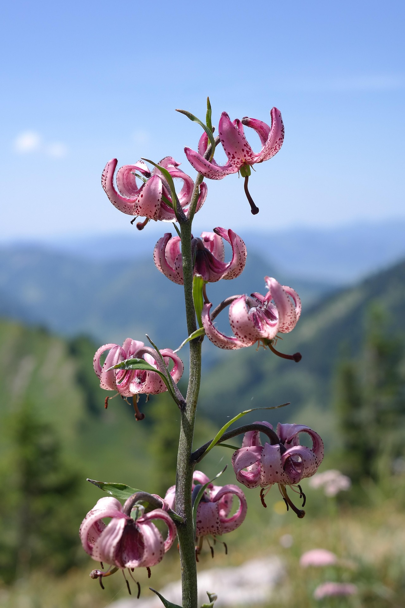
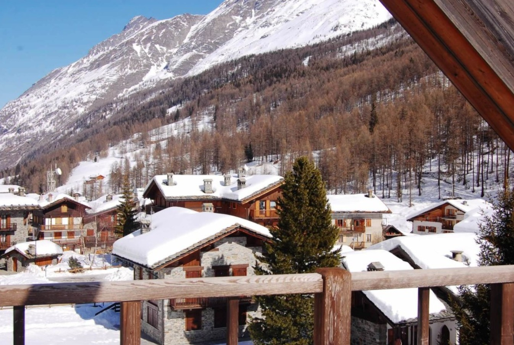
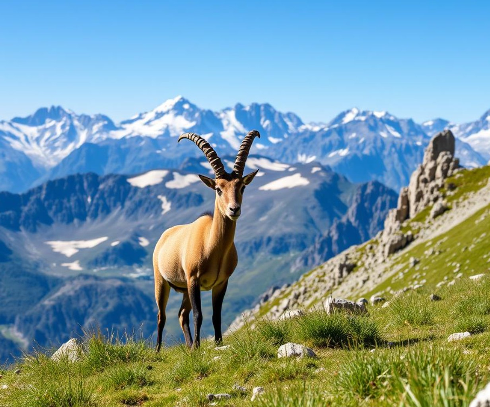
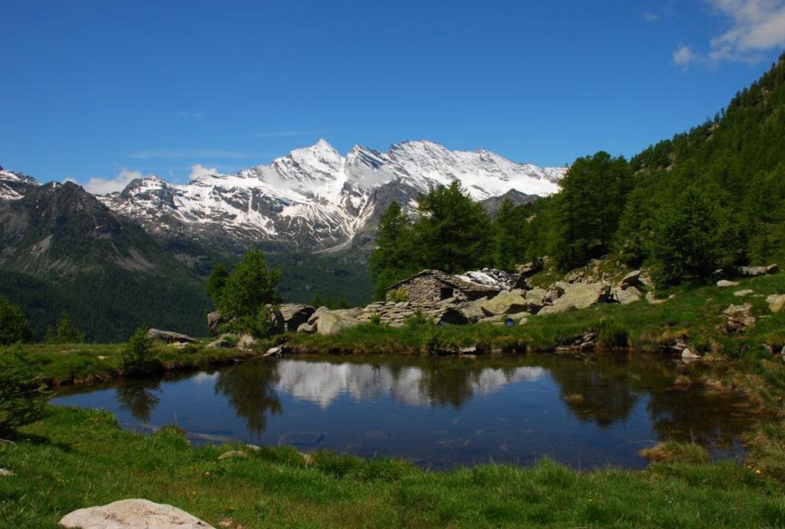

Parco Gran Paradiso
Il primo parco nazionale italiano, con ghiacciai, prati alpini e il simbolico stambecco.

Il Parco Nazionale del Gran Paradiso, istituito nel 1922, è il primo parco nazionale italiano e un simbolo della conservazione naturalistica. Situato tra la Valle d’Aosta e il Piemonte, si estende per oltre 70.000 ettari, abbracciando vette maestose, ghiacciai scintillanti e vallate verdi. Il suo nome deriva dal Gran Paradiso, una montagna che raggiunge i 4.061 metri di altitudine, unica vetta interamente italiana a superare i quattromila metri. Questo territorio rappresenta un vero paradiso per escursionisti, naturalisti e amanti della fauna alpina.

Ghiacciai e paesaggi alpini
Il paesaggio del Parco Nazionale del Gran Paradiso è dominato dalla presenza di ghiacciai e cime imponenti. I ghiacciai del Gran Paradiso, come quello della Tribolazione, alimentano torrenti e laghi alpini che riflettono le montagne circostanti. Questi specchi d’acqua, come il Lago Nivolet e il Lago Lillet, aggiungono un tocco di magia a un paesaggio già spettacolare.
Le vallate verdi, intervallate da cascate e praterie fiorite, offrono panorami mozzafiato. In primavera ed estate, i prati si riempiono di fiori selvatici come genziane, rododendri e stelle alpine, creando un’esplosione di colori. Le foreste di larici e abeti rossi, che si estendono fino a quote più alte, completano un ecosistema ricco e variegato.

Fauna emblematica
Il Parco Nazionale del Gran Paradiso è noto per ospitare una straordinaria varietà di fauna alpina, molte specie delle quali sono diventate simbolo del parco. Il più iconico è lo stambecco delle Alpi, salvato dall’estinzione proprio grazie alla creazione del parco. Oggi, questo animale maestoso è facilmente avvistabile nei prati e sulle rocce del parco.
Altre specie includono il camoscio alpino, la marmotta, e rapaci come l’aquila reale e il gipeto, recentemente reintrodotto. Durante le escursioni, non è raro scorgere piccoli abitanti delle Alpi come il fringuello alpino o il picchio muraiolo, che si mimetizzano tra le rocce.

Attività per i visitatori
Il parco offre una vasta gamma di attività che permettono ai visitatori di immergersi nella natura incontaminata. L’escursionismo è una delle principali attrazioni, con oltre 500 chilometri di sentieri ben segnalati che attraversano vallate, boschi e ghiacciai. Tra i percorsi più famosi c’è quello che conduce al Rifugio Vittorio Emanuele II, punto di partenza per la scalata al Gran Paradiso, e il Sentiero del Nivolet, che offre viste spettacolari sull’omonimo altopiano.
Durante l’inverno, il parco diventa una meta ideale per le attività sulla neve. Le ciaspolate e lo sci di fondo sono modi popolari per esplorare i paesaggi innevati, mentre le guide locali offrono escursioni per scoprire le tracce degli animali.
Per chi è interessato alla cultura, i piccoli villaggi intorno al parco, come Cogne, Valsavarenche e Rhêmes-Notre-Dame, conservano tradizioni e architetture alpine che raccontano la vita di montagna di un tempo.

Un patrimonio botanico unico
La flora del Parco Nazionale del Gran Paradiso è altrettanto ricca e variegata. Le praterie alpine ospitano specie rare come il giglio martagone, la sassifraga stellata e il papavero alpino, che fioriscono tra i 2.000 e i 3.000 metri di altitudine. Le aree più basse del parco sono dominate da foreste di larici, pini cembri e abeti rossi, che offrono un rifugio ideale per molte specie animali.
La biodiversità del parco è un tesoro botanico studiato da scienziati e naturalisti di tutto il mondo. Alcune delle piante che crescono qui sono endemiche delle Alpi e rappresentano un patrimonio unico da preservare.

Un patrimonio storico e culturale
Oltre alla sua straordinaria bellezza naturale, il Parco Nazionale del Gran Paradiso custodisce un importante patrimonio culturale. Gli alpeggi tradizionali, le baite in pietra e legno e i villaggi montani testimoniano la lunga relazione tra l’uomo e questo territorio.
Eventi culturali e sagre locali, come la tradizionale Devétéya di Cogne, celebrano la transumanza e il ritorno delle mandrie dai pascoli estivi. Questi momenti di festa permettono ai visitatori di scoprire le tradizioni locali e di assaporare i prodotti tipici, come la fontina DOP, il miele di montagna e le confetture di frutti di bosco.

Conservazione e sostenibilità
Il Parco Nazionale del Gran Paradiso è un modello di conservazione ambientale. Creato con l’obiettivo di proteggere lo stambecco, oggi il parco è un laboratorio vivente per la ricerca scientifica e la gestione sostenibile del territorio. Le attività umane, come il pascolo e il turismo, sono regolamentate per ridurre l’impatto sull’ambiente, garantendo la preservazione degli ecosistemi.

Come visitare il Parco Nazionale del Gran Paradiso
Il parco è accessibile da diverse località, tra cui Cogne, Valsavarenche e Rhêmes-Notre-Dame in Valle d’Aosta, e Noasca e Ceresole Reale in Piemonte. I centri visita presenti in queste aree offrono informazioni sui sentieri, sulle attività e sulla fauna del parco.
Il periodo migliore per visitare il parco è la primavera e l’estate, quando la natura è in piena fioritura e i sentieri sono facilmente percorribili. Tuttavia, ogni stagione ha il suo fascino: l’autunno regala colori caldi e avvistamenti di animali, mentre l’inverno offre paesaggi innevati di rara bellezza.
Con i suoi paesaggi mozzafiato, la ricca fauna e le tradizioni culturali, il Parco Nazionale del Gran Paradiso è una destinazione imperdibile per chiunque voglia immergersi nella natura autentica delle Alpi italiane. Un luogo dove la bellezza e la conservazione si fondono in un equilibrio perfetto, regalando esperienze indimenticabili.